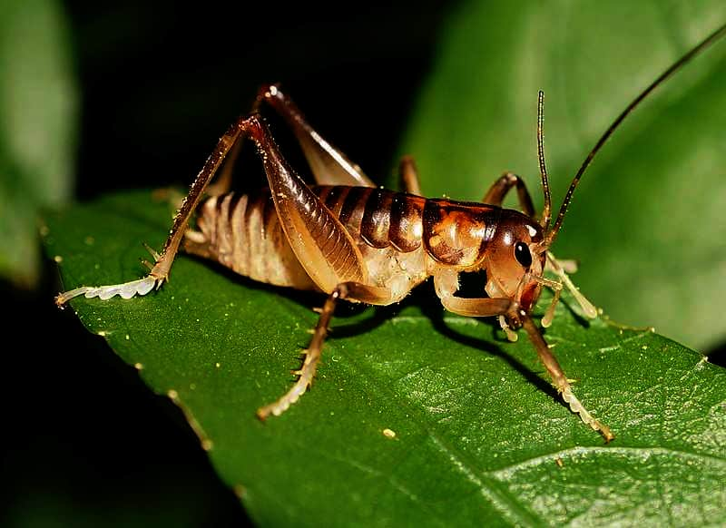
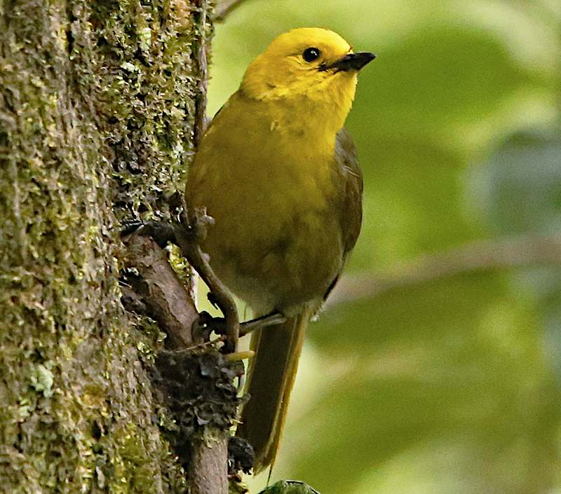
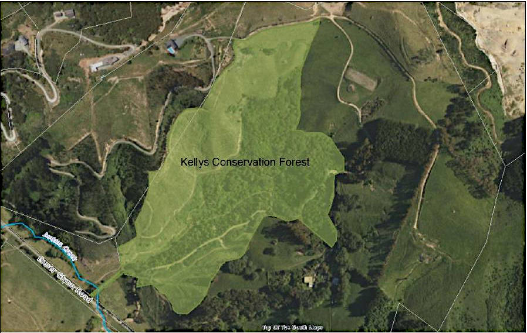
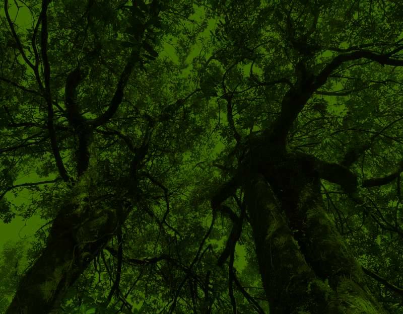

Open Day for the public to celebrate our win in the environment court and the restoration of our trails and picnic areas.
Date and time: Sunday 22nd October from 1-4pm,
rain or shine.
There will be activities for children.
Entry is free and all are welcome.
Address: 100, Enner Glynn Road, Nelson.
An Award-Winning Conservation Project

About the Forest
Kellys Conservation Forest is located at Enner Glynn Nelson and covers 17ha. This is nearly 7 times its original size. For 37 years the Kelly family, assisted by many community groups, has worked to clear the weeds and replant areas around the original forest, It is now more than seven times its original size. They have built trails, picnic areas, steps and bridges, and welcome over 1000 visitors every year through open days, educational visits and school plantings.
Eco-sourced native trees are grown onsite, for replanting every year, enhancing this Significant Natural Area which is protected in perpetuity by a Department of Conservation covenant.
Kellys Forest is a special place where people can freely enjoy walking in the forest with their families or having a picnic.
Many groups of both adults and children have planted trees in Kellys Forest, and have used this as an educational resource over the years. They continue to do so, making this a long standing valuable community education, conservation and recreational asset.
There is considerable inter-generational community investment in the project, as the children who planted trees in the forest 20+ years ago are now bringing their own children to visit, walk and plant.
Biodiversity is abundant with native birds, lizards and insects
Can you spot shells of the endangered powelliphanta?

Explore the Weta Houses
Or even see the rare mohua
Over 100 different species of native plants grow in this unique area of pre-European native bush. Covered in mature lowland tawa/titoki/matai, this is one of the few areas of this type left in the region.
Many rare species call this remarkable place home, including the endangered the Nelson Green Gecko and giant earthworms.
Shells of the endangered Powelliphanta (giant snail) have been found in the forest in good condition, suggesting a live population may still exist. The endangered Parera ducks breed in the valley. The forest houses rarely found fungi and orchids.
An aerial view of the Forest
This aerial view shows the situation of the Kelly Farm in relations to its neighbours and how much of the farm the forest takes up: 1) York Valley tip at top right; 2) Neighbouring sub-divisions on the left.
Management Plan
Click on the following link to view the current management plan for the forest. It contains alot of useful information, and the vision for the future: Management Plan - April 2023 (3.5Mb)
Country Calendar Episode
Click on the following link to view the episode when Country Calendar visited the forest: Hyundai Country Calendar – Season 2020, Episode 36
Endorsements
"Kelly's Conservation Forest is a jewel in the crown of New Zealand's conservation efforts. It's critical to protect areas like this native bush as part of New Zealand's commitment to care for our native rākau and whenua: and not only that, to preserve the unique educational resource that the Forest provides for this community."
"We're immensely proud of the dedicated work undertaken by Lindy Kelly and her family to protect and care for the Conservation Forest, which, as recently seen on Hyundai Country Calendar, is an absolute stand-out amongst the 700+ native planting projects we support nationwide. The mature and newly planted bush alike provides habitat for an immeasurable number of native species, and it's vital to endangered flora and fauna on a national level that the land is preserved intact as a home to these unique taonga."
"This area of mature lowland tawa/titoki/ matai forest is an excellent example of what would have clothed much of the lower altitude areas around Nelson city. Sadly, few of these areas now remain…"
"An excellent example of a lowland forest type almost totally depleted in the Nelson area."
Photo Opportunities
The forest offers photographers plenty of opportunities to get some great shots. The Tawa trees are a magnificent part of the forest. The image below was taken from the ground looking up into the canopies of two of these trees. A green filter was used for effect.
